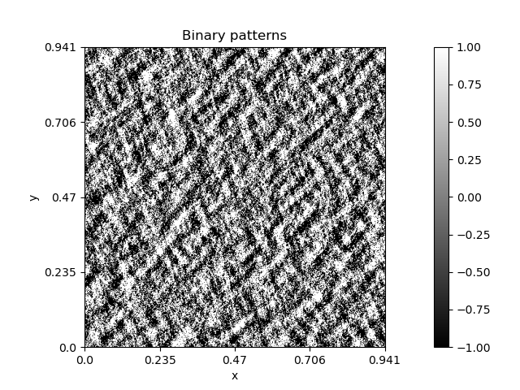

Note
Click here to download the full example code
Binary textures¶
Code author: Frédéric Richard <frederic.richard_at_univ-amu.fr>
In this example, we show how to simulate texture images with binary patterns.
Binary patterns are obtained by applying a Laplacian operator to simulated fields, which highlights the field geometry.
import numpy as np
from afbf import perfunction, tbfield
# Define an AFBF.
topo = perfunction('Fourier', 3, 'Topo')
hurst = perfunction('step', 2, 'Hurst')
Z = tbfield('afbf', topo, hurst)
Z.hurst.ChangeParameters(np.array([[0.5, 0.1]]), np.array([[-1.18, 1.3]]))
Z.topo.ChangeParameters(np.array([[2, 1, 0, 0.06, -0.15, 0.64, 0.25]]))
# Simulate the field.
np.random.seed(1)
z = Z.Simulate()
# Compute the Laplacian of the simulation at scale 20.
laplacian = z.ComputeLaplacian(15)
# Compute its sign.
patterns = laplacian.ComputeImageSign()
# Display.
patterns.name = 'Binary patterns'
patterns.Display()
Total running time of the script: ( 0 minutes 8.324 seconds)